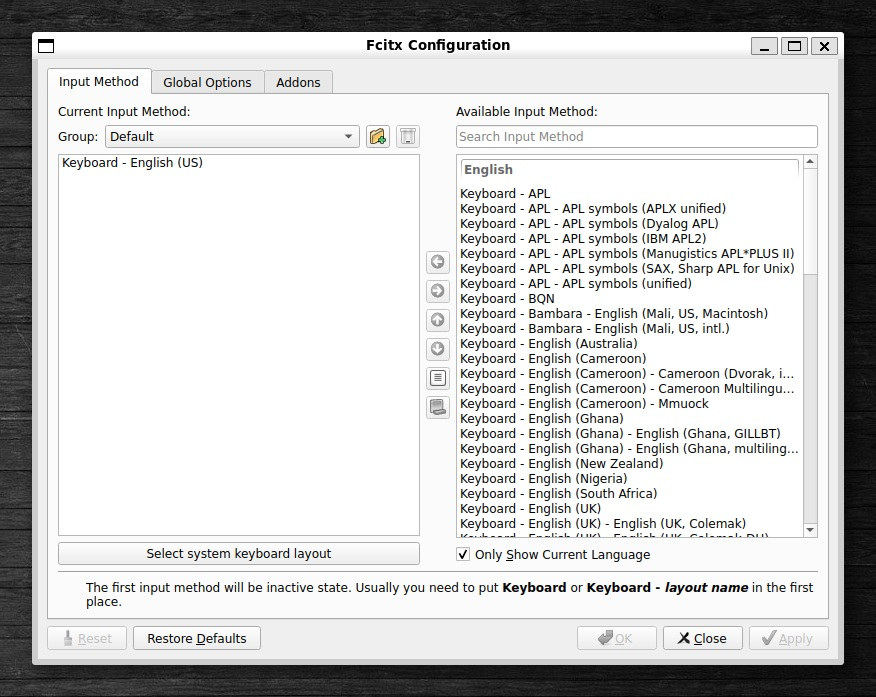
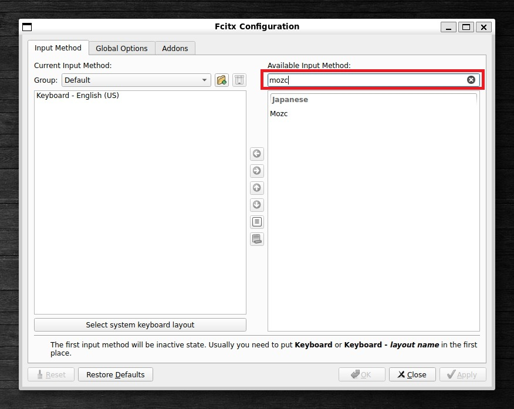
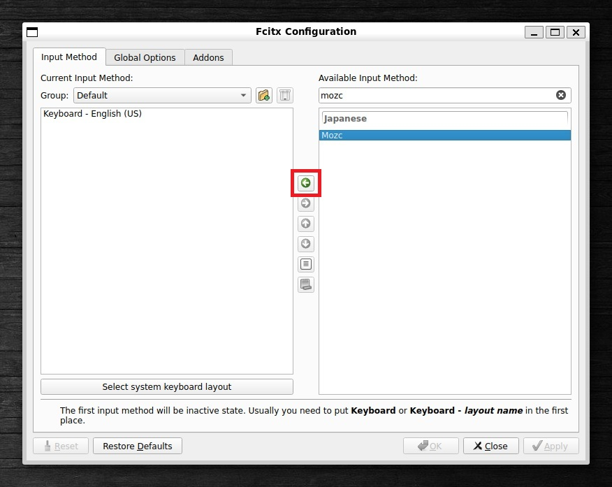
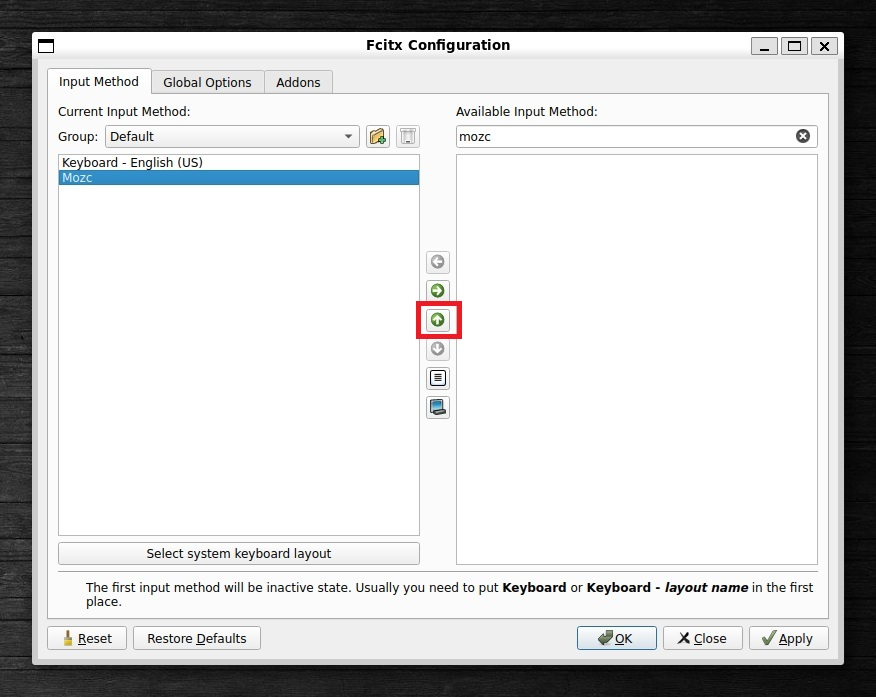
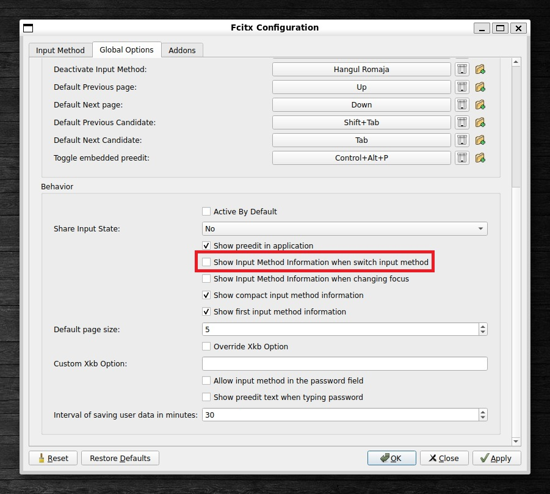
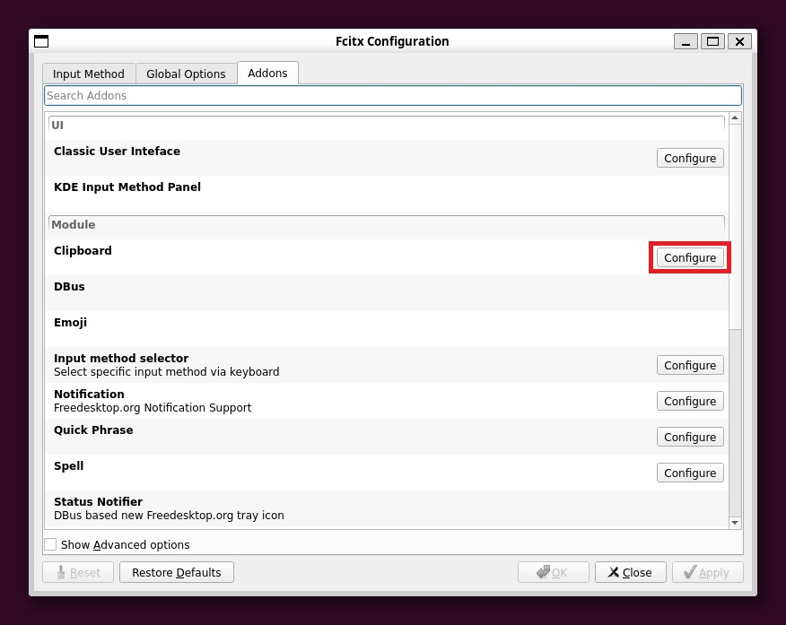

Ubuntu 日本語 Input Method の設定 (fcitx5-mozc)
概要
以前、fcitx-mozc を使用していたのですが、IMが切り替わらなくなることがあり、emacs-mozc を使用していました。 あらためて今回調査したところ、fcitx5-mozc を使えば、比較的安定して動作することがわかりました。(ただし、やはり不安定な部分はあります)
詳細
fcitx5-mozc をインストールします。
sudo apt install fcitx5-mozc
.bashrc に下記を追記します。
export GTK_IM_MODULE=fcitx5 export QT_IM_MODULE=fcitx5 export XMODIFIERS=@im=fcitx5 export INPUT_METHOD=fcitx5 export DefaultIMModule=fcitx5 if [ $SHLVL = 1 ] ; then (fcitx5 --disable=wayland -d --verbose '*'=0 &) fi
bashを再起動します。
キー設定
fcitx5-configtool の起動
fcitx5-configtool
初期状態では下記のようになっています。

右側の入力部分でmozcを検索します。

mozcを選択し、「←」の部分をクリックして左側の枠に表示されるようにします。

左側に表示されました。 「↑」をクリックして一番上に移動します。

Applyします。
Applyされた状態。
IM切替時のMethod informationの表示を無効化
EmacsでIM切り替え時に表示がパタパタしてしまうのでこちらは非表示にします。
デフォルトではチェックが入っています。
チェックを外します。

Ctrl + Space の無効化
デフォルトの設定ではこのようになっています。
削除します。
削除後の状態です。
Control + ; の無効化
Addons -> Module -> Clipboard のところにあります。
設定を開きます。

削除します。
.emacs.d/init.el の設定
;;---- fcitx5 ---- ; you need to install "fcitx5-mozc" first (defun my-fcitx5-set-english () "Switch fcitx5 to English mode (input off) at Emacs startup." (shell-command "fcitx5-remote -o")) (add-hook 'after-init-hook #'my-fcitx5-set-english) (defun my-fcitx5-indicator () "Function to return a string indicating the status of fcitx5." (let ((state (string-trim (shell-command-to-string "fcitx5-remote")))) (if (string= state "2") "[A]" "[あ]"))) (setq-default mode-line-format (cons '(:eval (my-fcitx5-indicator)) mode-line-format))